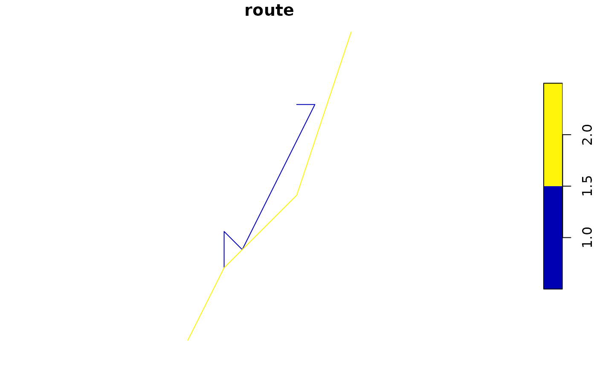

generate migration routes from a BirdFlow model
route_migration.Rdcreate stochastic migration routes for a species by sampling appropriate starting locations and then routing for the duration of the migration window.
Arguments
- bf
BirdFlowmodel- n
the number of routes to generate
- migration
"prebreeding", "pre", or "spring" for the prebreeding migration; or "postbreeding", "post", or "fall" for the postbreeding migration.
Value
This will likely change. Currently returns a list with:
- points
A data.frame with coordinates, date, and route id
- lines
a sf object containing one line per route.
Details
The two migration periods are defined based on the species information in the BirdFlow model:
prebreedingmigration starts at
species_info("nonbreeding_end")and ends atspecies_info("breeding_start")postbreedingmigration starts at
species_info("breeding_end")and ends atspecies_info("nonbreeding_start")
Examples
bf <- BirdFlowModels::amewoo
rts <- route_migration(bf, 2)
plot(rts$lines)

head(rts$points)
#> x y route timestep date
#> 1 314942.6 3982093 1 2 2019-01-11
#> 2 314942.6 3982093 1 3 2019-01-18
#> 3 314942.6 3982093 1 4 2019-01-25
#> 4 314942.6 3982093 1 5 2019-02-01
#> 5 314942.6 3982093 1 6 2019-02-08
#> 6 314942.6 3982093 1 7 2019-02-15